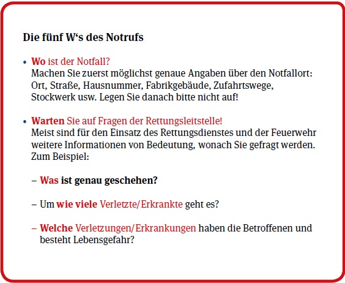

Jeder Mensch ist dazu verpflichtet, einer Person Hilfe zu leisten, wenn die Situation es verlangt, ohne sich jedoch selbst zu schaden. Nach § 323 c Strafgesetzbuch wird mit Freiheitsstrafe bis zu einem Jahr oder mit Geldstrafe bestraft, wer bei Unglücksfällen oder gemeiner Gefahr oder Not nicht Hilfe leistet, obwohl dies erforderlich und den Umständen nach zuzumuten, insbesondere ohne erhebliche eigene Gefahr und ohne Verletzung anderer wichtiger Pflichten möglich ist.
"Hilfe" ist jedes Mittel, das geeignet ist, einen drohenden Schaden abzuwenden. Die Frage der "Zumutbarkeit" der Hilfeleistung ist immer Einzelfallbezogen zu betrachten. Welche Hilfe zumutbar ist richtet sich u. a. nach der Lebenserfahrung und der Vorbildung der helfenden Person. Personen mit besonderer Sachkunde (z. B. approbierte Ärzte) und besonderen Hilfsmitteln müssen mehr tun als unausgebildete Laienhelfer und -helferinnen. Nicht zumutbar ist eine Hilfeleistung, wenn man sich selbst oder andere einer erheblichen Gefahr aussetzt oder andere Pflichten verletzt (z. B. Aufsichtspflicht über kleinere Kinder).
Erste Hilfe sind medizinische, organisatorische und betreuende Maßnahmen an Erkrankten oder Verletzten mit einfachen Mitteln unter Einbeziehung des Notrufs.
Ersthelfer im Betrieb sind Personen, die nach den Vorschriften der gesetzlichen Unfallversicherungsträger für die Erste Hilfe ausgebildet wurden. Helfen kann nur, wer erkennen kann, welche Maßnahmen notwendig sind und diese auch beherrscht, also ausgebildet ist. Rechtzeitig kann die Hilfe nur erfolgen, wenn sichergestellt ist, dass zu jeder Zeit und an jedem Ort bei einem Unglücksfall geschultes Personal plangemäß eingesetzt werden kann und die notwendigen Hilfsmittel und Notrufeinrichtungen zur Verfügung stehen. Eine Erste Hilfe, die sich in der Möglichkeit erschöpft, ärztliche Hilfe herbeizurufen oder die Verletzten schnell ins Krankenhaus zu bringen, könnte für Notfallpatienten und -patientinnen tödlich sein (siehe Abschnitte 2.3 und 6.4). Um irreparable Schäden und ggf. den Tod zu verhindern, ist Hilfe so lange erforderlich, bis die professionelle Hilfe eintrifft. Lückenlose Hilfe vom Ort des Geschehens an bis ins Krankenhaus kann nur durch organisatorische Maßnahmen sichergestellt werden.
Unter der Ersten Hilfe im Betrieb sind dementsprechend Leistungen zu verstehen, durch die Verletzte und Erkrankte zur Abwendung akuter Gesundheits- und Lebensgefahren durch eigens dazu ausgebildete Helfer oder Helferinnen vorläufig versorgt werden. Zum Gebiet der Ersten Hilfe zählen nicht nur die im konkreten Fall durchzuführenden Maßnahmen, sondern auch alle organisatorischen Maßnahmen, Vorkehrungen, Einrichtungen, Sachmittel, die sie vorbereiten, ermöglichen und verbessern oder der Aufzeichnung dienen. Die Erste Hilfe ist eine wichtige Voraussetzung für die medizinische Rehabilitation. Stellt man die Gefahr, in der sich Verletzte befinden, in den Vordergrund der Betrachtung, so wird anstelle von Erster Hilfe von Rettung gesprochen. Die organisatorische Gesamtheit der Ersten Hilfe findet unter diesem Gesichtspunkt ihren Ausdruck in den Begriffen Rettungsdienst und Rettungswesen.
Einen besonderen Teil der Ersten Hilfe stellen die Sofortmaßnahmen dar, die bei lebensbedrohlichen Zuständen zu ergreifen sind.
Sofortmaßnahmen:
Der Notruf ist die Meldung eines Notfalls mit dem Ziel der Alarmierung des Rettungsdienstes, der Feuerwehr und/oder der Polizei.
Die bundesweit einheitliche Notrufnummer ist 112.
Der Notruf geht zur zuständigen Rettungsleitstelle.
Der Notruf muss klar und knapp alle Angaben enthalten, die erforderlich sind, um gezielt und ohne Zeitverlust die notwendigen Rettungseinheiten zum Einsatz zu bringen und an den Notfallort leiten zu können. Nicht auflegen! Weitere Anweisungen und Unterstützung wird von der Rettungsleitstelle gegeben.
Die Rettungskette versinnbildlicht die Forderung nach einer lückenlosen Versorgung der Verunfallten oder Erkrankten, die am Ort des Geschehens beginnt und in der Klinik endet.
Für die Rettung der betroffenen Personen können Sekunden entscheidend sein. Deswegen muss die Versorgung unmittelbar am Ort des Geschehens durch Laien einsetzen und sich auf dem Transport ins Krankenhaus fortsetzen. Die Maßnahmen der Ersten Hilfe durch Laien, des Rettungsdienstes und des Krankenhauses bilden daher gleichsam eine rettende Kette. Diese ist allerdings nur so stark wie ihr schwächstes Glied.
